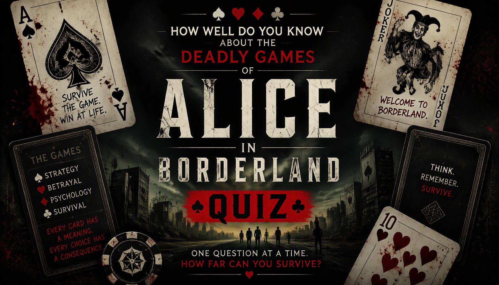

Alice in Borderland Games Trivia
Think you can survive the Borderland? Test your knowledge of the deadly games, rules, playing cards, challenges and memorable game mechanics from Alice in Borderland.
Ready? See how much you remember about the games of Alice in Borderland.
This quiz contains spoilers for Alice in Borderland.


About The Quiz
The Alice in Borderland Games Trivia is a 40-question quiz based on the deadly games featured in Alice in Borderland. The questions cover game objectives, rules, playing cards, locations, hazards and unusual mechanics from the Borderland games.
The series places its characters in a mysterious world where they must participate in dangerous games to survive. Each game has its own rules, difficulty and playing-card designation.
This quiz focuses specifically on the games, rather than only the characters or general plot. It includes questions about games such as Tag, Distance, Witch Hunt, Osmosis, Solitary Confinement, Beauty Contest and other challenges.
Alice in Borderland Games
Genre: Survival, science fiction, thriller and mystery
Game system: Players participate in dangerous games to obtain visas and continue surviving in the Borderland.
Playing cards: Games are associated with numbered and face cards, with different suits representing different types of challenges.
Game categories: The games can test physical ability, intelligence, cooperation, psychological strength and other survival skills.
How Quiz Works
The quiz contains 40 questions. Every question has four possible choices, but only one answer is correct. Read each question carefully and select the answer you believe is correct.
Each correct answer gives you 1 point, while an incorrect answer gives you 0 points. With 40 questions in total, your correct answers are converted into a final percentage.
Your final result represents how many questions you answered correctly. The result categories are based on your performance across all 40 questions.
Quiz Navigation
Starting the Quiz
Select START QUIZ on the opening screen to begin. The first question will appear with four possible answers.
Selecting an Answer
Read the question and all four choices before making your selection. Once you choose an answer, the quiz automatically moves forward after a short delay.
Next and Back Buttons
Use Next to move forward through the questions. The Back button allows you to return to an earlier question and change your selection. Your question number and progress are displayed as you move through the quiz.
Finishing the Quiz
Continue until all 40 questions have been answered. When you reach the end, submit your answers to finish the quiz and view your final score and game knowledge result.
Try Again and Challenge Friends
After viewing your result, select TRY AGAIN to replay the quiz and attempt a higher score. You can also use SHARE MY RESULT or CHALLENGE YOUR FRIENDS to share your result.
FREQUENTLY ASKED QUESTIONS
How many questions are in the quiz?
There are 40 questions in total, and every question has four possible choices.
What is the maximum score?
The maximum result is 100%. Each correct answer contributes 1 point before the score is converted into a percentage.
What topics are covered?
The quiz covers the games of Alice in Borderland, including Tag, Distance, Light Bulb, Beast Hunter, Human Elevator, Witch Hunt, Osmosis, King of Spades, Solitary Confinement, Beauty Contest, Queen of Hearts, Zombie Hunt, Runaway Train and other games.
Is this quiz mainly about the games?
Yes. The questions focus primarily on the rules, objectives, locations, hazards, cards and mechanics of the games featured in Alice in Borderland.
Do I need to watch Alice in Borderland before taking the quiz?
It is recommended. Many questions are based on specific game rules and events that may be difficult to answer without watching the series.
What does my score mean?
Your percentage shows how many of the 40 questions you answered correctly. A higher percentage means you correctly remembered more details about the games of Alice in Borderland.
Can I take the quiz again?
Yes. Select TRY AGAIN after completing the quiz to start another attempt and try to improve your score.
Can I challenge my friends?
Yes. Select CHALLENGE YOUR FRIENDS after completing the quiz to share the challenge and see whether your friends can beat your score.
Spoiler Warning
This quiz contains spoilers for Alice in Borderland. Questions may reveal important details about game rules, objectives, playing cards, challenges and outcomes.
If you have not watched the series, consider watching it before taking the quiz to avoid having important story and game details revealed.